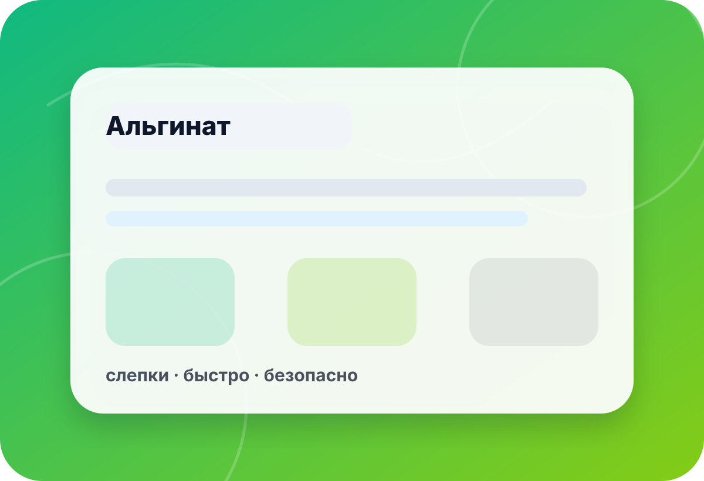

категория · preview
ALJA-SAFE — серия альгината для ручного уточнения
Эта preview-страница помогает сформулировать запрос по серии ALJA-SAFE. Цены, наличие, корзина и оплата не подключены; фасовка, время работы, расход и условия применения уточняются вручную.
- цены
- нет
- наличие
- уточнить
- оплата
- выкл.
- preview
- noindex

направления
Как выбрать серию и фасовку
Для альгината критичны размер слепка, время работы, температура воды и подготовка рабочего места.
без обещаний
Что уточняется перед рекомендацией
Preview-категория не заменяет инструкцию производителя и тест на вашей задаче.
Размер и объект
От размера слепка зависят расход, ёмкость для замешивания и рабочее время.
- размер
- объект
- расход
 ◎
◎Процесс
Температура воды, скорость замешивания и подготовка влияют на результат.
- вода
- замес
- схватывание
 ✦
✦Фасовка и получение
Актуальная доступность, город и документы проверяются вручную.
- фасовка
- город
- B2B
чек-лист
Что указать в запросе по ALJA-SAFE
Объект слепка
Опишите, что снимается, ориентировочные размеры и требования к детализации.
Указать:объект · размер · детализация · разовый слепокУсловия работы
Температура, количество участников и скорость подготовки влияют на выбор.
Указать:температура · время · опыт · местоОбъём
Нужны количество слепков, расход и желаемая фасовка.
Указать:количество · расход · фасовка · запасПолучение
Город, доставка и документы согласуются после проверки наличия.
Указать:город · доставка · B2B · контактмини-бриф
Подготовьте запрос по ALJA-SAFE
Форма в preview не отправляет данные на сервер. Скопируйте текст и отправьте его по телефону или почте.